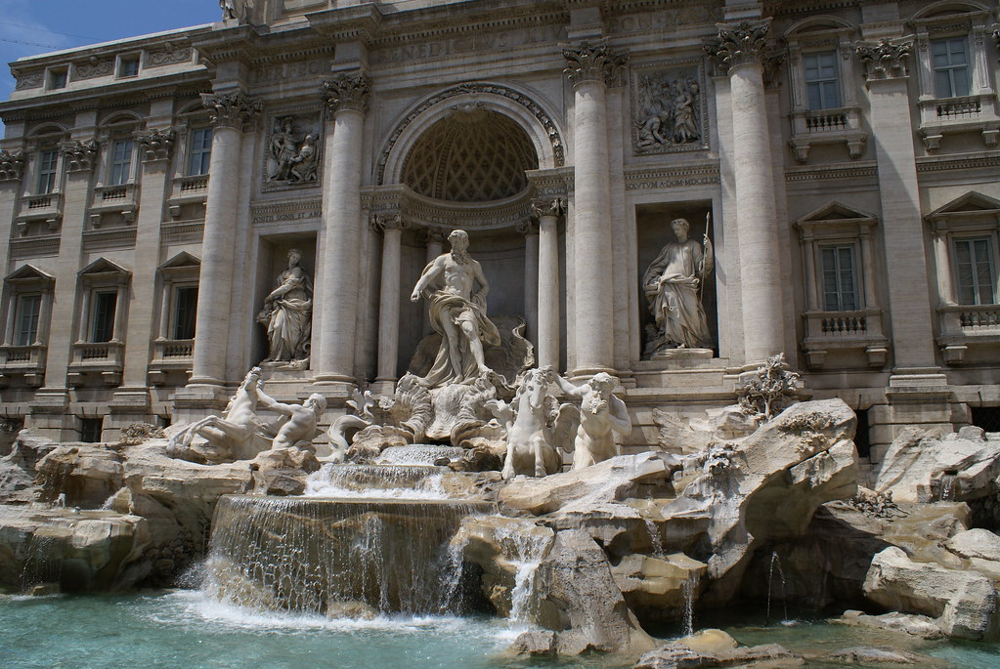
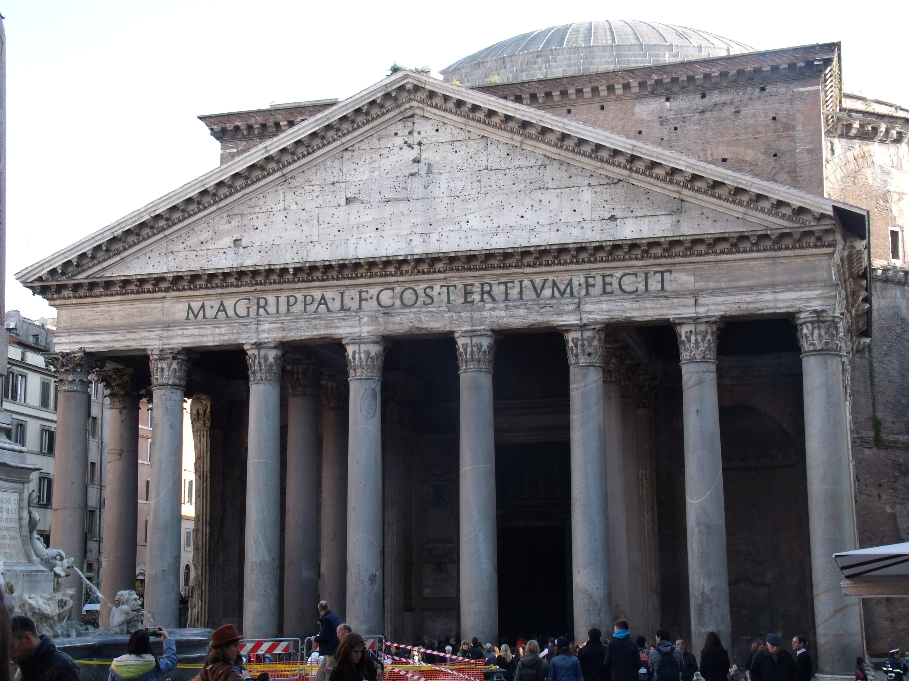

Rome is an Italian city, capital of the Lazio region and of Italy. With a population of 2,857,321
inhabitants, it is the most populous municipality in Italy and the third most populous city in the
European
Union. By antonomasia, it has been known since ancient times as the Urbe (Urbs). It is also called
"The
Eternal City" (in Italian, Città Eterna).
In the course of its history, which spans three millennia, it came to extend its domains over the
entire
Mediterranean basin and much of Europe, the Middle East and North Africa. As the capital of the
Republic and
the Roman Empire, it became the first great metropolis of humanity, the center of one of the most
important
ancient civilizations. It influenced the society, culture, language, literature, music, art,
architecture,
philosophy, gastronomy, religion, law and morals of the following centuries.
It is the city with the highest concentration of historical and architectural assets in the world;
its
historical center delimited by the perimeter marked by the Aurelian walls, overlapping traces of
three
millennia, is the maximum expression of the historical, artistic and cultural heritage of the
western world.
In 1980, together with the extraterritorial properties of the Holy See that are in the city and the
Basilica
of Saint Paul Outside the Walls, it was included in the UNESCO World Heritage list.
Fontana di Trevi
The Fontana di Trevi, with nearly 40 meters in front, is one of the largest monumental Baroque
fountains in
Rome (Italy).
According to the current administrative division of the center of Rome, it is located in the Trevi
rione.
The fountain is located at the intersection of three streets (tre vie),
marking the point of the Aqua Virgo (in Italian, Acqua Vergine), one of the ancient aqueducts that
supplied
water to Rome.
Roman technicians located a source of pure water just 22 km from the city (scene depicted on the
current
facade of the source).

Fontana di Trevi
Panteon Roma
The Pantheon of Agrippa, also known as the Pantheon of Rome, is one of the architectural masterpieces
present
in the Italian capital as well as being the best preserved building of ancient Rome.
The construction of the Pantheon took place in the time of Hadrian, in the year 126 AD. It receives
the name
of Agrippa for having been built where previously, in the year 27 BC, the Pantheon of Agrippa was
destroyed
by fire in the year 80 AD.
During the beginning of the 7th century the building was donated to Pope Boniface IV who transformed
it into
a church, thus keeping it in perfect condition to this day.

Panteon de Agripa
Basilica de San Pedro
The Papal Basilica of Saint Peter (Latin: Basilica Sancti Petri; Italian: Basilica Papale di San
Pietro in
Vatican),
Commonly known as Saint Peter's Basilica, it is a Catholic temple located in Vatican City.
The basilica has the largest interior space of a Christian church in the world, it is 193 m long,
44.5 m
high, and covers an area of 2.3 hectares.
The height conferred by its dome makes its figure dominate the skyline of Rome. It is considered one
of the
holiest places in Catholicism. It has been described as "occupying a unique position in the
Christian
world",
and as "the greatest of all the churches of Christendom." It is one of the four major basilicas and
one of
the churches that must be visited in the pilgrimage of the seven churches of Rome to reach the
plenary
indulgence.